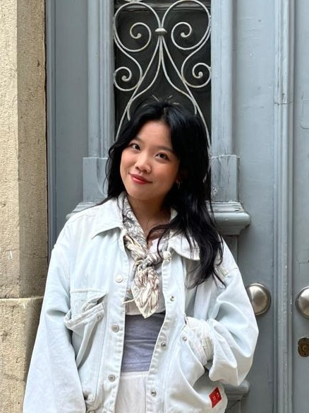

Hi, there!
I am Renate "Nana" Zhang.
I am a PhD Student in the Human-Centered Computing Section at Aarhus University, advised by Prof. Jens Emil Grønbæk.
My research focuses on designing better and more intuitive interaction systems for Mixed Reality (MR) environments. I have explored how people interact with the system and with each other in MR through empirical methods. In my future work, I aim curious to find out how Mixed Reality can help us to better communicate, iterate and modify ideas in collaborative settings.
I have received my Master of Science degree in Media and Human-Centered Computing at the Technical University of Vienna. Previously, I have worked as a research assistant at Aalto University in Helsinki, within the Computational Behavior Lab.